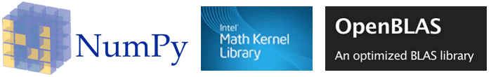

Reproducible science with Docker
tl;dr: Dockerise your Jupyter workflow

By Kenneth Ho / Github
What this session is not
- A comprehensive rundown of Docker
- How to deploy with Docker
- Yet another magic bullet
What this session is
- Minimal Docker knowledge to create reproducible notebooks
Agenda
- How I used to work
- Intro to Docker: why and what is it
- Demo: My workflow and getting started
My previous workflow
Conda environment + yaml files

Caveats
- The occasional pip
- Recipes manages for a combination now
- Environment reproducibility sucks
conda env export > environment.yml
name: py36
channels:
- anaconda
- cvxgrp
- conda-forge
- defaults
dependencies:
- beautifulsoup4=4.6.3=py36_0
- patsy=0.5.1=py36_0
- sqlite=3.25.3=ha441bb4_0
- tk=8.6.8=ha441bb4_0
- asn1crypto=0.24.0=py36_1003
- ca-certificates=2018.11.29=ha4d7672_0
- certifi=2018.11.29=py36_1000
- cffi=1.11.5=py36h5e8e0c9_1
- clangdev=4.0.0=default_0
- cryptography=2.3.1=py36hdbc3d79_1000
- cryptography-vectors=2.3.1=py36_1000
- cycler=0.10.0=py_1
- fftw=3.3.8=h470a237_0
- freetype=2.9.1=h6debe1e_4
- glpk=4.65=h16a7912_1
- gmp=6.1.2=hfc679d8_0
- icu=58.2=h0a44026_1000
- idna=2.8=py36_1000
- kiwisolver=1.0.1=py36h2d50403_2
- lapack=3.6.1=1
- libiconv=1.15=h1de35cc_1004
- libpng=1.6.35=ha92aebf_2
- libxml2=2.9.8=hf14e9c8_1005
- lightgbm=2.2.1=py36hfc679d8_0
- llvmdev=4.0.0=default_0
- matplotlib=2.2.3=py36h0e0179f_0
- metis=5.1.0=3
- mkl_fft=1.0.6=py36_0
- mkl_random=1.0.1=py36_0
- mlxtend=0.13.0=py_1
- openblas=0.2.20=8
- openmp=4.0.0=1
- openssl=1.0.2p=h1de35cc_1002
- pandas=0.23.4=py36hf8a1672_0
- pycparser=2.19=py_0
- pyopenssl=18.0.0=py36_1000
- pyparsing=2.2.0=py_1
- pysocks=1.6.8=py36_1002
- python=3.6.6=h4a56312_1003
- pytz=2018.5=py_0
- selenium=3.141.0=py36h470a237_0
- tbb=2018_20171205=0
- urllib3=1.24.1=py36_1000
- cvxcanon=0.1.1=py36_0
- cvxpy=1.0.6=py36_0
- ecos=2.0.5=py36hf9b3073_0
- multiprocess=0.70.4=py36_0
- scs=1.2.6=py36_0
- appnope=0.1.0=py36hf537a9a_0
- backcall=0.1.0=py36_0
- blas=1.0=mkl
- cvxopt=1.2.0=py36hb579ef3_0
- decorator=4.3.0=py36_0
- dill=0.2.8.2=py36_0
- dsdp=5.8=hb579ef3_0
- fastcache=1.0.2=py36h1de35cc_2
- gsl=2.4=h1de35cc_4
- intel-openmp=2019.0=117
- ipykernel=4.8.2=py36_0
- ipython=6.4.0=py36_0
- ipython_genutils=0.2.0=py36h241746c_0
- jedi=0.12.0=py36_1
- jupyter_client=5.2.3=py36_0
- jupyter_core=4.4.0=py36h79cf704_0
- libcxx=4.0.1=h579ed51_0
- libcxxabi=4.0.1=hebd6815_0
- libedit=3.1.20170329=hb402a30_2
- libffi=3.2.1=h475c297_4
- libgcc=4.8.5=hdbeacc1_10
- libgfortran=3.0.1=h93005f0_2
- libopenblas=0.3.3=hdc02c5d_2
- libsodium=1.0.16=h3efe00b_0
- mkl=2018.0.3=1
- ncurses=6.1=h0a44026_0
- numpy=1.15.4=py36h6a91979_0
- numpy-base=1.15.4=py36h8a80b8c_0
- parso=0.2.1=py36_0
- pexpect=4.6.0=py36_0
- pickleshare=0.7.4=py36hf512f8e_0
- pip=10.0.1=py36_0
- prompt_toolkit=1.0.15=py36haeda067_0
- ptyprocess=0.5.2=py36he6521c3_0
- pygments=2.2.0=py36h240cd3f_0
- python-dateutil=2.7.3=py36_0
- pyzmq=17.0.0=py36h1de35cc_1
- readline=7.0=hc1231fa_4
- scikit-learn=0.20.1=py36h4f467ca_0
- scipy=1.1.0=py36h28f7352_1
- setuptools=39.2.0=py36_0
- simplegeneric=0.8.1=py36_2
- six=1.11.0=py36h0e22d5e_1
- suitesparse=5.2.0=he235d88_0
- toolz=0.9.0=py36_0
- tornado=5.0.2=py36_0
- traitlets=4.3.2=py36h65bd3ce_0
- wcwidth=0.1.7=py36h8c6ec74_0
- wheel=0.31.1=py36_0
- xz=5.2.4=h1de35cc_4
- zeromq=4.2.5=h378b8a2_0
- zlib=1.2.11=hf3cbc9b_2
- pip:
- absl-py==0.2.2
- astor==0.6.2
- bleach==1.5.0
- cython==0.28.3
- gast==0.2.0
- grpcio==1.12.1
- h5py==2.8.0
- html5lib==0.9999999
- keras==2.2.0
- keras-applications==1.0.2
- keras-preprocessing==1.0.1
- markdown==2.6.11
- pillow==5.1.0
- protobuf==3.5.2.post1
- pyramid-arima==0.6.5
- pyyaml==3.12
- sklearn==0.0
- statsmodels==0.9.0
- tensorboard==1.8.0
- tensorflow==1.8.0
- termcolor==1.1.0
- tqdm==4.23.4
- werkzeug==0.14.1
- xlrd==1.1.0
prefix: /Users/username/anaconda2/envs/py36
conda env create -f py36.yml
Collecting package metadata: done
Solving environment: failed
ResolvePackageNotFound:
- libgfortran==3.0.1=h93005f0_2
- pyzmq==17.0.0=py36h1de35cc_1
- python==3.6.6=h4a56312_1003
- prompt_toolkit==1.0.15=py36haeda067_0
- libiconv==1.15=h1de35cc_1004
- sqlite==3.25.3=ha441bb4_0
- six==1.11.0=py36h0e22d5e_1
- cryptography==2.3.1=py36hdbc3d79_1000
- openssl==1.0.2p=h1de35cc_1002
- libxml2==2.9.8=hf14e9c8_1005
- libcxxabi==4.0.1=hebd6815_0
- matplotlib==2.2.3=py36h0e0179f_0
- ptyprocess==0.5.2=py36he6521c3_0
- readline==7.0=hc1231fa_4
- libedit==3.1.20170329=hb402a30_2
- libgcc==4.8.5=hdbeacc1_10
- xz==5.2.4=h1de35cc_4
- pickleshare==0.7.4=py36hf512f8e_0
- appnope==0.1.0=py36hf537a9a_0
- scipy==1.1.0=py36h28f7352_1
- cvxopt==1.2.0=py36hb579ef3_0
- jupyter_core==4.4.0=py36h79cf704_0
- dsdp==5.8=hb579ef3_0
- ncurses==6.1=h0a44026_0
- tk==8.6.8=ha441bb4_0
- ecos==2.0.5=py36hf9b3073_0
- wcwidth==0.1.7=py36h8c6ec74_0
- scikit-learn==0.20.1=py36h4f467ca_0
- libopenblas==0.3.3=hdc02c5d_2
- traitlets==4.3.2=py36h65bd3ce_0
- libsodium==1.0.16=h3efe00b_0
- ipython_genutils==0.2.0=py36h241746c_0
- fastcache==1.0.2=py36h1de35cc_2
- numpy==1.15.4=py36h6a91979_0
- numpy-base==1.15.4=py36h8a80b8c_0
- zlib==1.2.11=hf3cbc9b_2
- libffi==3.2.1=h475c297_4
- pygments==2.2.0=py36h240cd3f_0
- icu==58.2=h0a44026_1000
- gsl==2.4=h1de35cc_4
- libcxx==4.0.1=h579ed51_0
- suitesparse==5.2.0=he235d88_0
- zeromq==4.2.5=h378b8a2_0
Why Docker
- Eliminates dependency hell
- Lightweight
- Easy to ship
What is Docker?

How does it solve environment reproducibility?
- Docker engine
- Dockerfile
- Image
- Container
An analogy
soup recipe üìù > pot of soup üç≤ > serving of soup ü•£
My DS workflow with Docker
Dockerfile + env_file in project directory
Dockerfile
FROM jupyter/tensorflow-notebook@sha256:a09c137aa9bb946224be6db9d03785a17f8946466065b29041ec9603c19fcdde
RUN conda install -yc conda-forge opencv && conda install -yc conda-forge pyqt
Environment variables
# Controlling container environment of Jupyter Docker Stacks docs - https://jupyter-docker-stacks.readthedocs.io/en/latest/using/common.html#docker-options
# for allowing HTTPS connections
GEN_CERT=yes
# lab enabled
JUPYTER_ENABLE_LAB=yes
# set numeric user id for joyvan, select a number that matches owner id of host volume
# NB_UID=1009
# to allow for installation of libraries during dev
# RESTARTABLE=yes
For WSL users: Set container’s user id to match that of host volume
Running docker images
docker build -t $IMAGE_NAME .
docker run -it --rm \
--name "$CONTAINER_NAME" \
-p 9999:8888 \
--env-file ./env.list \
-v $(pwd):/home/jovyan/work \
--user root \
"$IMAGE_NAME" \
start-notebook.sh --NotebookApp.token=''
The two commands I generally use
The first time you build an image
run an interactive , pseudo-terminal (-it) and an ephemeral (--rm) container
Docker specific commands: container and image name, publish port (localhost:container), current working dir
Jupyter docker stack-specific config: environment list (those on WSL may need to set user permissions by running with root user)
Script to start notebook. Authentication disabled.
⚠️ enable authentication if container is not isolated
Your turn
Writing your own Dockerfile
- Find your project dir
- Copy my Dockerfile to it
- Find your image here
- Add your own
RUNcommands
protip 1: chain operators to prevent layer bloat
protip 2: freeze image version in Dockerfile by using image:digest
Advanced tidbit: docker-compose
- For configuring and starting multiple containers on the same host
- Pre-configured yaml config file
- Dockerfile +
docker runcommand
⚠️ Requires rebuilding if Dockerfile changes